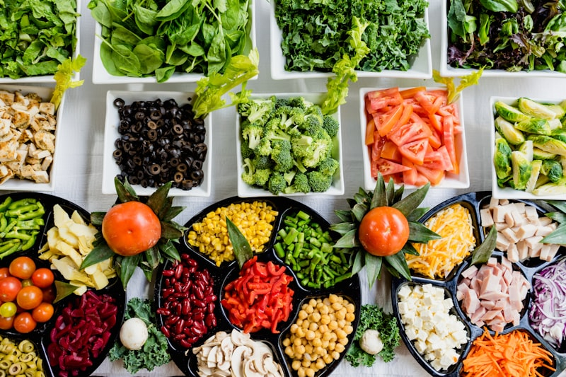
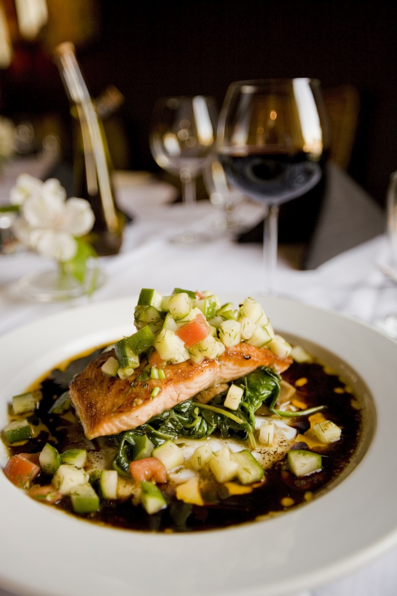
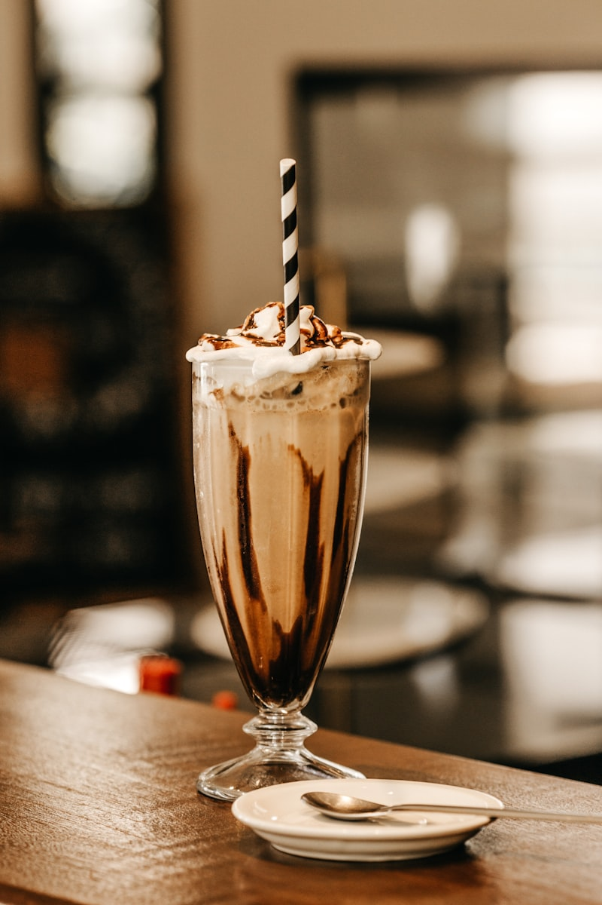
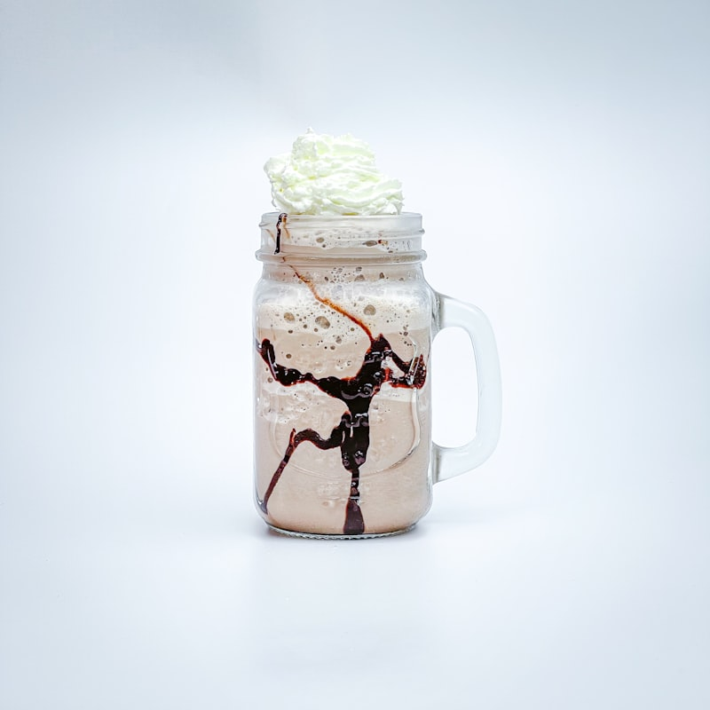
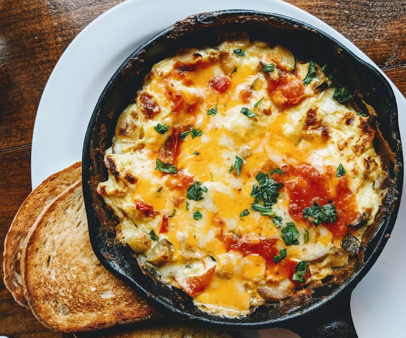
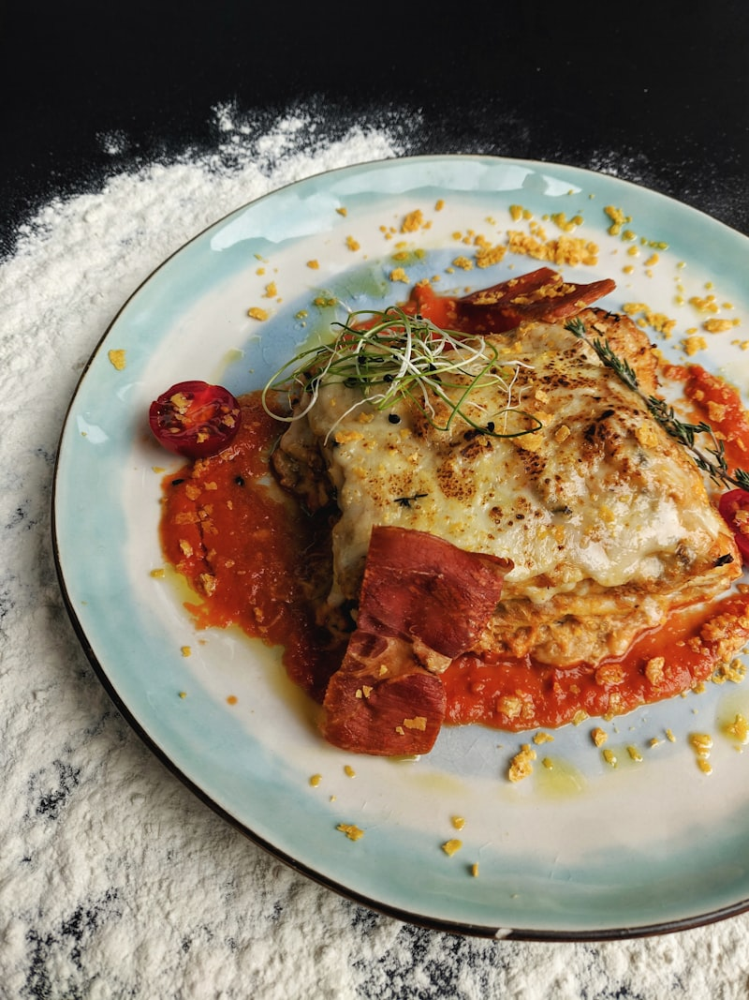
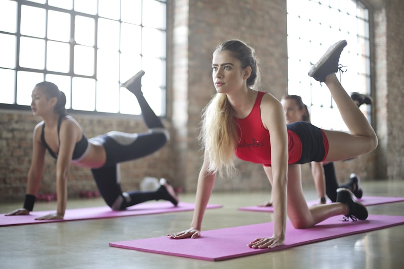
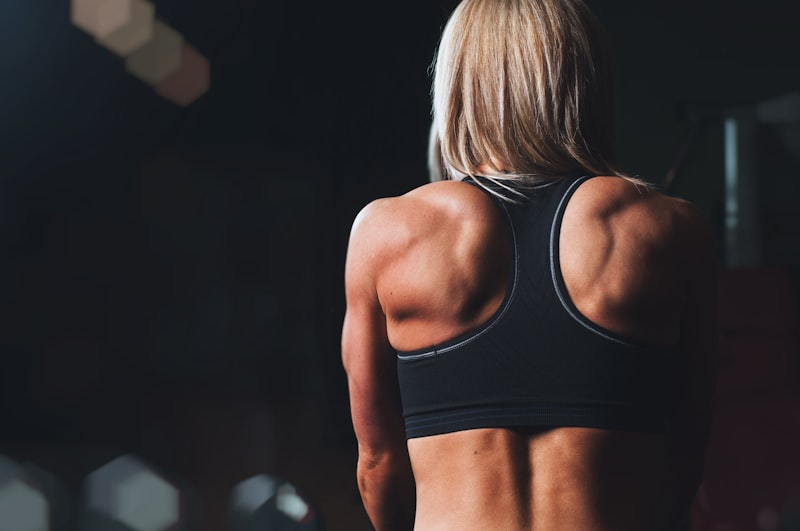

Recupera Tu Fuerza Después de los 40
Si sientes que tu ropa queda más floja, tus brazos más delgados o tu energía más baja… no es tu culpa. Después de los 40, los cambios hormonales hacen que tu cuerpo pierda masa muscular más rápido de lo que la construye.
Pero aquí está la buena noticia: **sí puedes recuperar músculo, fuerza y vitalidad** con la alimentación correcta y ejercicios seguros.
💪 **Recetas altas en proteína** que construyen músculo sin picos de insulina
🥤 **Batidos inteligentes** que aumentan calorías saludables
📅 **Menú de 3 días** diseñado para tu metabolismo hormonal
🏋️ **Rutinas en casa** sin necesidad de gimnasio
⚠️ Ganar masa muscular no es vanidad — es salud, protección ósea y estabilidad metabólica. El músculo es tu mejor aliado para mantener tu insulina en equilibrio.

Por Qué Pierdes Músculo y Cómo Recuperarlo
Entiende qué pasa en tu cuerpo después de los 40 y los principios para recuperar masa muscular de forma segura.

- 📉 SARCOPENIA — A partir de los 30 perdemos entre 3-8% de masa muscular por década. Después de los 40, se acelera
- 🧬 HORMONAS — La disminución de estrógeno y progesterona afecta directamente la capacidad de construir músculo
- ⚡ RESISTENCIA INSULÍNICA — Cuando la insulina no funciona bien, los nutrientes no llegan eficientemente al músculo
- 🦴 HUESOS — Menos músculo = menos protección ósea = mayor riesgo de osteoporosis
- 💡 El músculo es un órgano metabólico: cuanto más tienes, mejor regula tu cuerpo la insulina.
- 💡 1 kg de músculo quema 13 calorías al día en reposo vs 4.5 del tejido graso.
- 💡 El ejercicio de resistencia mejora la sensibilidad a la insulina hasta 48 horas después.
- 💡 Nunca es tarde para empezar: estudios muestran ganancia muscular incluso en mayores de 70 años.

- 1️⃣ PROTEÍNA EN CADA COMIDA — Pollo, huevo, atún, sardinas, carne magra, queso fresco, tofu. Meta: 1.0 a 1.2 g por kilo de peso corporal al día
- 2️⃣ CARBOHIDRATOS INTELIGENTES — Avena, quinoa, lentejas, frijoles, batata (porción pequeña), arroz de coliflor
- 3️⃣ GRASAS BUENAS — Aguacate, aceite de oliva, frutos secos, semillas de chía y linaza
- 4️⃣ COMER CADA 3-4 HORAS — Nunca saltarte comidas; incluir meriendas con proteína
- 5️⃣ HIDRATACIÓN — Mínimo 2 litros de agua al día; el músculo es 75% agua
- 📊 Ejemplo para mujer de 65 kg: necesita 65-78 g de proteína al día.
- 🥚 1 huevo = 6g proteína | 🍗 100g pollo = 31g | 🐟 1 lata atún = 20g
- 🥛 1 taza yogur griego = 15g | 🫘 ½ taza frijoles = 8g
- 💡 Distribúyela en 4-5 comidas, no toda en una sola — tu cuerpo absorbe máximo 25-30g por comida.

Menú de 3 Días para Ganar Masa
Plan completo de 3 días con desayuno, almuerzo, merienda y cena — alto en proteína, bajo en índice glucémico.

- 🍳 DESAYUNO: Huevos revueltos con vegetales + ½ taza de avena
- • 2 huevos, ½ taza de vegetales picados (pimientos, espinaca), ½ taza de avena, 1 cdita aceite de oliva
- 🍽️ ALMUERZO: Pollo salteado con calabacín + ½ taza de frijoles
- • 150g pechuga de pollo en tiras, 1 taza calabacín en rodajas, ½ taza frijoles cocidos, ajo y especias
- 🍧 MERIENDA: Yogur griego con chía y frutos rojos
- • ½ taza yogur griego sin azúcar, 1 cda semillas de chía, canela o frutos rojos
- 🌙 CENA: Carne magra con ensalada fresca y aguacate
- • 150g carne magra a la plancha, 1 taza ensalada (lechuga, tomate, pepino), ½ aguacate
- 🍳 Desayuno: Calienta aceite, sofríe vegetales 2-3 min, agrega huevos batidos y revuelve. Sirve con avena cocida.
- 🍽️ Almuerzo: Dora el pollo 5-7 min, añade calabacín 3-4 min. Sirve con frijoles.
- 🍧 Merienda: Mezcla yogur con chía, deja reposar 5 min. Agrega canela o frutos rojos.
- 🌙 Cena: Cocina carne a la plancha 5-7 min. Sirve con ensalada y aguacate. Aliña con aceite de oliva.

- 🍳 DESAYUNO: Tortilla de espinaca y avena
- • 2 huevos, ½ taza espinaca fresca, 2 cdas avena, 1 cdita aceite de oliva
- 🍽️ ALMUERZO: Filete de pescado con puré de coliflor
- • 150g filete de pescado (tilapia, merluza), 1 taza coliflor cocida, limón, aceite de oliva
- 🍧 MERIENDA: Batido de proteína casero
- • 1 taza leche descremada, ¼ taza frutos rojos, 1 cda mantequilla de maní, 1 cda cacao sin azúcar
- 🌙 CENA: Tacos de lechuga con carne molida y queso fresco
- • 150g carne molida magra, 3 hojas grandes de lechuga, 30g queso fresco, ½ tomate, comino y paprika
- 🍳 Desayuno: Bate huevos con espinaca y avena. Cocina en sartén 3-4 min por lado.
- 🍽️ Almuerzo: Cocina pescado a la plancha 5-7 min por lado. Tritura coliflor con aceite y sal para el puré.
- 🍧 Merienda: Licúa todos los ingredientes con hielo hasta obtener una mezcla cremosa.
- 🌙 Cena: Dora la carne con especias. Rellena hojas de lechuga con carne, tomate y queso.

- 🍳 DESAYUNO: Omelette de claras con espinaca y pavo
- • 4 claras de huevo, 50g pechuga de pavo en cubitos, ½ taza espinaca, orégano
- 🍽️ ALMUERZO: Sardinas con arroz de coliflor
- • 1 lata sardinas en agua (escurridas), 1 taza coliflor rallada, limón, cilantro fresco
- 🍧 MERIENDA: Yogur griego con nueces y canela
- • ½ taza yogur griego, 1 cda nueces picadas, canela al gusto
- 🌙 CENA: Pollo al horno con vegetales asados
- • 150g pechuga de pollo, 1 taza vegetales variados (zanahoria, brócoli, calabacín), romero, limón
- 🍳 Desayuno: Dora pavo 2-3 min, agrega espinaca 1 min, vierte claras batidas. Cocina 3-4 min.
- 🍽️ Almuerzo: Saltea coliflor rallada 3-4 min. Sirve sardinas encima con limón y cilantro.
- 🍧 Merienda: Coloca yogur en tazón, agrega nueces y canela.
- 🌙 Cena: Horno a 180°C. Sazona pollo y vegetales con aceite, romero y limón. Hornea 25-30 min.

Batidos para Ganar Masa Muscular
Batidos inteligentes que aumentan tus calorías saludables y proteína sin disparar tu insulina.

- ½ taza de yogur griego natural sin azúcar
- ½ taza de agua
- 1 cucharada de crema de maní natural
- 1 cucharada de semillas de chía
- 2 cucharadas de avena
- Hielo al gusto
- Coloca el yogur, agua y crema de maní en la licuadora.
- Agrega la chía y la avena.
- Licúa hasta obtener una mezcla homogénea y cremosa.
- Sirve inmediatamente.

- 1 taza de café preparado (frío o a temperatura ambiente)
- ½ taza de leche descremada o bebida vegetal sin azúcar
- 1 cucharada de cacao en polvo sin azúcar
- 1 cucharada de mantequilla de maní
- Hielo al gusto
- Prepara el café y déjalo enfriar.
- Coloca todos los ingredientes en la licuadora.
- Licúa hasta que esté cremoso y espumoso.
- Sirve inmediatamente con hielo.

- 1 taza de leche descremada o bebida vegetal sin azúcar
- ½ aguacate pequeño
- 1 puñado de espinaca fresca
- 1 cucharadita de semillas de chía o linaza
- Hielo al gusto
- Coloca la leche, aguacate y espinaca en la licuadora.
- Agrega las semillas y el hielo.
- Licúa hasta obtener una mezcla cremosa y homogénea.
- Sirve inmediatamente.

Recetas Altas en Proteína
Platos principales ricos en proteína diseñados para construir músculo y mantener tu equilibrio hormonal.

- 150g de pechuga de pollo en tiras
- ½ taza de yogur griego natural sin azúcar (como crema)
- 1 diente de ajo picado
- ½ taza de vegetales (brócoli, calabacín o champiñones)
- 1 cucharadita de aceite de oliva
- Sal, pimienta, orégano y tomillo al gusto
- Calienta el aceite en un sartén y dora el pollo 5-7 minutos.
- Añade el ajo y los vegetales, saltea 2-3 minutos.
- Reduce el fuego y agrega el yogur griego, mezcla bien.
- Cocina 2-3 minutos más hasta que la salsa espese.
- Sazona con hierbas y sirve caliente.

- 2 huevos enteros
- ½ taza de espinaca fresca picada
- 1 cucharada de harina de almendras
- 1 cucharadita de avena
- 1 cucharadita de aceite de oliva
- Sal y pimienta al gusto
- Bate los huevos y mezcla con la espinaca, harina de almendras y avena.
- Calienta el aceite en un sartén a fuego medio.
- Vierte la mezcla y cocina 3-4 minutos por cada lado.
- La tortilla debe quedar firme y dorada.
- Sirve caliente.

- 150g de carne magra (res o cerdo) en tiras
- ½ taza de tomate triturado natural
- ½ taza de caldo de verduras
- 1 diente de ajo picado
- ½ taza de vegetales (pimientos, champiñones, calabacín)
- 1 cucharadita de aceite de oliva
- Comino, orégano, laurel al gusto
- Calienta aceite y dora la carne 3-4 minutos.
- Añade ajo picado y saltea 1 minuto.
- Agrega tomate triturado y caldo, mezcla bien.
- Incorpora vegetales y cocina a fuego medio-bajo 10-15 minutos.
- Sazona con especias y sirve caliente.

Rutina de Ejercicios en Casa
Ejercicios seguros con tu propio peso corporal — sin gimnasio, sin equipos, diseñados para mujeres después de los 40.

- 🦵 SENTADILLAS — Baja como si fueras a sentarte en una silla. No necesitas bajar demasiado. 10 repeticiones × 3 series
- 🦶 ELEVACIÓN DE TALONES — De pie, sube y baja los talones lentamente. 10 repeticiones × 3 series
- 🍑 PUENTE DE CADERA — Acostada boca arriba, sube y baja las caderas apretando glúteos. 10 repeticiones × 3 series
- ⏱️ Descansa 30-60 segundos entre cada serie. Hazlo a tu ritmo, sin prisa
- 🔹 Calienta primero: camina en el lugar 2-3 minutos.
- 🔹 Sentadillas: Pies separados al ancho de caderas. Baja lento, sube lento. Si necesitas apoyo, sostente de una silla.
- 🔹 Talones: Apóyate en una pared si necesitas equilibrio. Sube hasta las puntas y baja controlado.
- 🔹 Puente: Acuéstate, pies apoyados en el suelo, sube caderas apretando glúteos arriba. Baja lento.

- 🧱 FLEXIONES EN PARED — Apoya manos en la pared e intenta acercar tu pecho. 10 repeticiones × 3 series
- 💪 ELEVACIÓN DE BRAZOS CON BOTELLAS — Toma una botella de agua en cada mano, sube y baja los brazos. 10 repeticiones × 3 series
- 🧘 ABDOMINALES SENTADA — Sentada, manos detrás de la nuca, lleva codo derecho a rodilla izquierda y viceversa. 10 repeticiones × 3 series
- ⏱️ Descansa 30-60 segundos entre cada serie
- 🔹 Flexiones en pared: Párate a un brazo de distancia de la pared. Manos a la altura del pecho. Acerca y aléjate lentamente.
- 🔹 Botellas: Usa botellas de 500ml-1 litro según tu fuerza. Sube un brazo, bájalo, repite con el otro.
- 🔹 Abdominales: Contrae el abdomen durante todo el ejercicio. El movimiento es lento y controlado.
- 🔹 Al terminar, estira suavemente brazos y espalda.
- ✅ Siempre come algo 30-60 minutos antes de ejercitarte (nunca en ayunas)
- ✅ Hidrátate antes, durante y después del ejercicio
- ✅ Si sientes mareo, detente, siéntate y espera a que pase. Es normal al inicio
- ✅ El dolor muscular al día siguiente es NORMAL — significa que el músculo se está reconstruyendo
- ✅ Si tienes alguna lesión o condición, consulta a tu médico antes de comenzar
- 🍌 PRE-EJERCICIO (30 min antes): Yogur griego con avena, o 1 huevo con media tortilla, o 1 banana con mantequilla de maní.
- 💧 DURANTE: Toma sorbos de agua cada 10-15 minutos.
- 🥤 POST-EJERCICIO (dentro de 30 min): Batido de proteína, o yogur griego con fruta, o 2 huevos con vegetales.
- 😴 DESCANSO: Duerme mínimo 7 horas — el músculo se construye mientras duermes.